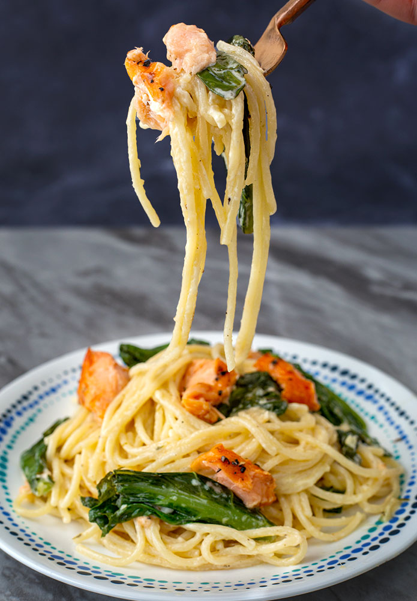

Creamy Salmon Pasta

Description
A filling pasta topped with tender, flaky salmon and fresh spinach, all smothered in a rich, creamy sauce.
The smoked salmon and fish sauce add just the perfect amount of salt!
Prep Time: 30 minutes
Cook Time: 30 minutes
Makes: 4 servings
Ingredients
- 1⁄4 cup (50g) butter
- 2 tablespoons olive oil
- 5 cloves of garlic, finely chopped
- 1 lemongrass stalk
- 2 tablespoons flour
- 2 cups (500ml) heavy cream
- 1 tablespoon lemon juice
- 2 teaspoons lemon zest
- 1 teaspoon fish sauce
- 1 teaspoon pepper
- 1 teaspoon dried thyme
- 1 teaspoon dried oregano
- 1⁄2 cup (60g) grated parmesan cheese
- 1 pound (500g) spinach, chopped
- 1 pound (453g) spaghetti, cooked al dente according to the manufacturer's directions and 1 cup of pasta water, reserved
- 1 pound (500g) smoked salmon
Steps
- In a frying pan over medium-high heat, melt the butter with the oil. Once the butter melts, add the garlic and lemongrass. Cook until the garlic just starts to brown, about 3 minutes. Whisk in the flour and cook until it blends in with the butter and oil.
- Slowly whisk in the heavy cream, lemon juice, lemon zest, and fish sauce and bring to a simmer. Cook for about 3 minutes.
- Add the pepper, thyme, and oregano and whisk together. Add the parmesan and whisk together until well combined. Add the spinach leaves and cook until wilted.
- Add the cooked pasta and mix together. If the sauce is too thick, add a little bit of pasta water to loosen it. Turn off the heat, add the smoked salmon, and stir together until well-combined. Serve immediately.